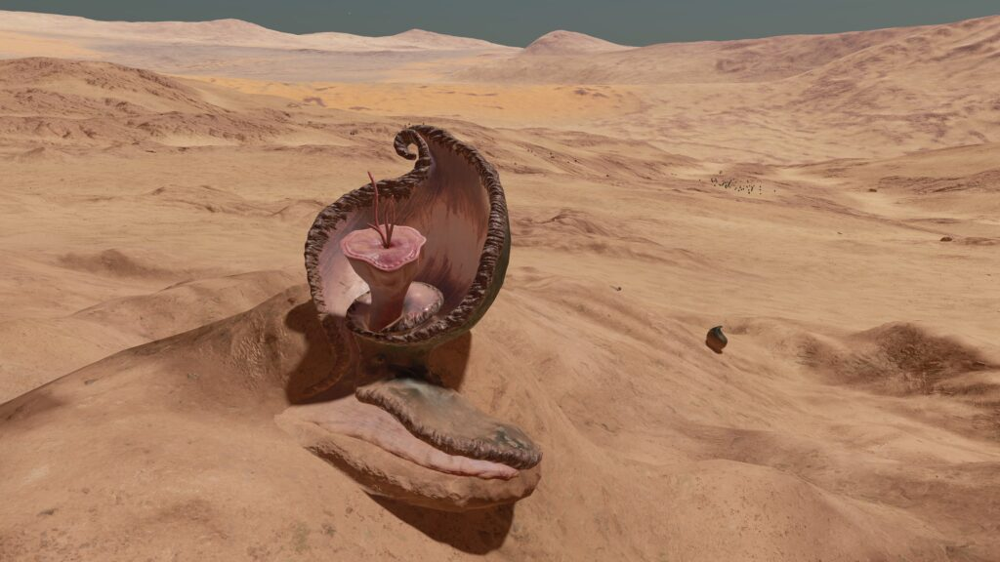
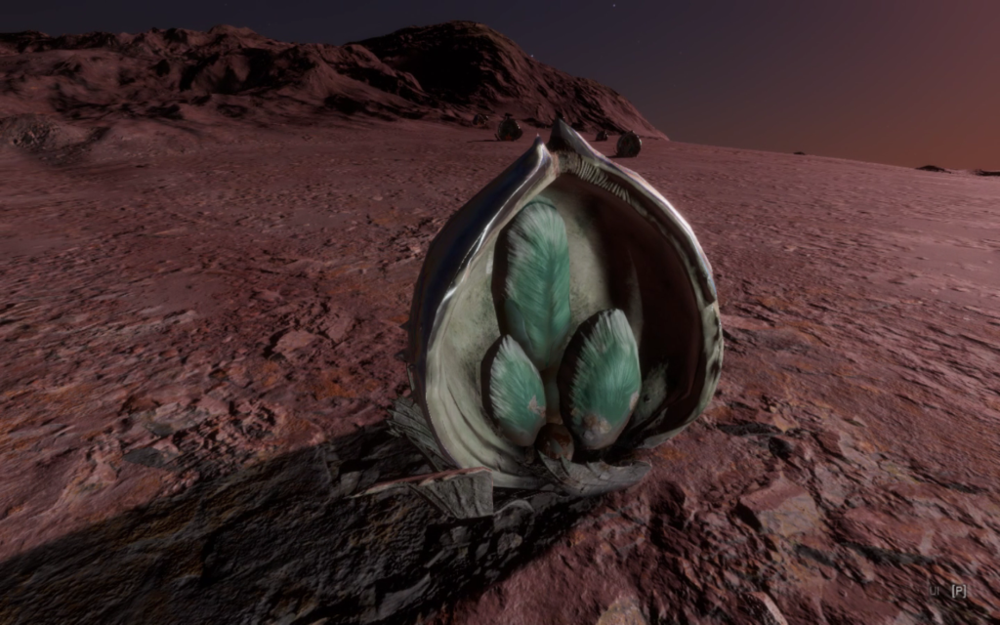
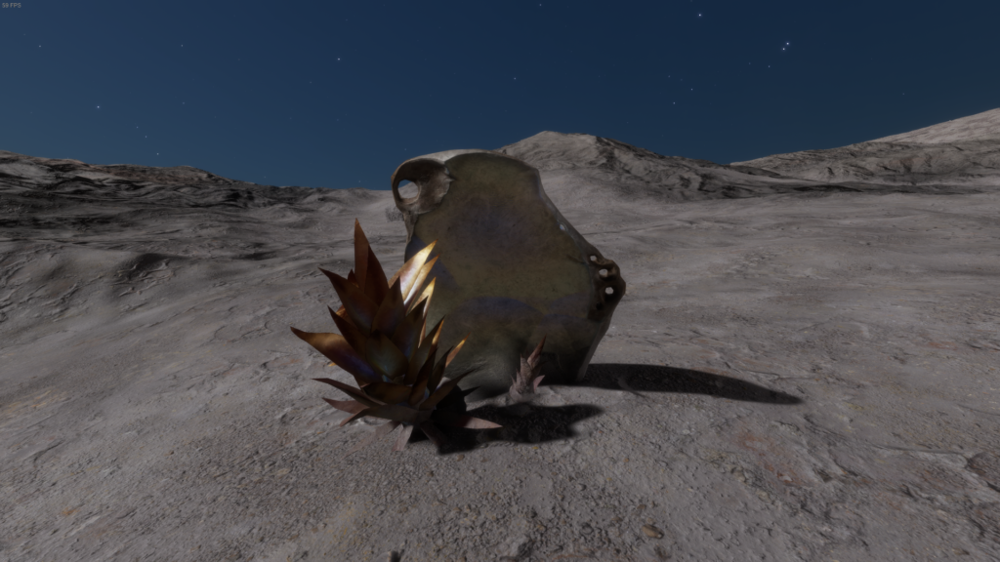

|  |  |  |  |
 |  |  |  |  |
 |  |  |  |  |
 |  |
A mature Clypeus Margaritus – Mauve. Image courtesy of Cmdr. Darwin
Extremophile organisms that have evolved to create hard shield structures, primarily to protect against stellar radiation. They also collect and condense traces of liquid material in the atmosphere, allowing the organisms to flourish in extremely arid environments. The shields are typically synthesised from surrounding inorganic material. which will frequently define their shape and colouration.
Other spawning requirements being met, Clypeus may be found inhabiting rock-strewn plains and low hillside terrain.
Variant Determinant: Stellar Class
Stellar Class and Variant
| Stellar Class | O | B | A | F | G | K | M | L | T | TTS | Ae | Y | W | D | N |
| Variant | Mr | Or | Mv | Am | Gy | Tu | Te | Gr | Li | Ye |
Planetary Body Type: High Metal Content or Rocky
Atmosphere: Carbon Dioxide or Water
Gravity: Less than 0.28G
Minimum Colonial Separation: 150m
| Species Name | Percentage of recorded Clypeus Population | Vista Genomics Offer Price |
|---|---|---|
| Clypeus Lacrimam | 54.20% | 8,418,000 |
| Clypeus Margaritus | 28.10% | 11,873,200 |
| Clypeus Speculumi | 17.70% | 16,202,800 |
All data as at 30th September 3311.
For the most up-to-date statistics and Vista Genomics pricing, please visit:
Canonn Bioforge or the data-enriched Codex Regions.

A Species of Clypeus that grows a broad, tear-shaped shield to protect the sensitive organism from extreme sunlight. The shield’s ridges help to direct Water droplets down into the soil.
Planetary Body Type: Rocky (100%)
Atmosphere: Carbon Dioxide (43%) or Water (57%)
Volcanism: Insignificant
Temperature Pressure Gravity
| Minimum | Average | Mode | Maximum | |
| Temperature (K) | 190.00 | 324.02 | 191.00 | 451.95 |
| Pressure (atm) | 0.053710446 | 0.081248591 | 0.063325739 | 0.098691132 |
| Gravity (G) | 0.04 | 0.11 | 0.05 | 0.25 |
Galactic Arm Preference: No Preference

This Clypeus Species produces a curved shield that resembles a large pearl in shape and texture. Up to three central organisms grow within it upon a supporting bed of leaves.
Planetary Body Type: High Metal Content (100%)
Atmosphere: Carbon Dioxide (54%) or Water (46%)
Volcanism: Insignificant
Temperature Pressure Gravity
| Minimum | Average | Mode | Maximum | |
| Temperature (K) | 190.00 | 299.15 | 190.83 | 452.01 |
| Pressure (atm) | 0.050931337 | 0.080586142 | 0.072331597 | 0.098691160 |
| Gravity (G) | 0.04 | 0.16 | 0.06 | 0.27 |
Galactic Arm Preference: No Preference

A Clypeus Species that grows an angular shield with a mirrored exterior to protect the spiky organisms.
Planetary Body Type: Rocky (100%)
Atmosphere: Carbon Dioxide (62%) or Water (38%)
Volcanism: Insignificant
Temperature Pressure Gravity
| Minimum | Average | Mode | Maximum | |
| Temperature (K) | 190.00 | 280.43 | 190.07 | 451.74 |
| Pressure (atm) | 0.052855360 | 0.079856739 | 0.088680646 | 0.098690014 |
| Gravity (G) | 0.04 | 0.14 | 0.05 | 0.24 |
Galactic Arm Preference: No Preference
| | | | |
| | | | |
| | | | |
| |